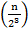
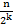

Алгоритмите в сайта са описани на псевдокод, което ги прави по-лесни за четене и разбиране.
УЕБ БАЗИРАНО ПРИЛОЖЕНИЕ ПО
СИНТЕЗ И АНАЛИЗ НА АЛГОРИТМИ
Анализ на алгоритми. Изчислителна сложност. Класификация
Едно от важните изисквания към алгоритмите засяга тяхната ефективност. Ефективността на алгоритмите се отнася към използваните ресурси - време и памет - за изпълнението им. За да може да се оцени ефективността, е необходима количествена мярка за това. Ролята на такава мярка играе понятието изчислителна сложност или сложност на алгоритъм. Според това какво се оценява - време или количество необходима памет, сложността бива времева или пространствена.
Да направим анализ на един алгоритъм означава да определим количествената мярка сложност на този алгоритъм. На практика се оказва, че по- важната характеристика за един алгоритъм е неговата времева сложност, затова тук ще обръщаме внимание именно на нея.
Защо е необходим анализ на сложността на един алгоритъм? Основните причини са две:
- Ако за решението на дадена задача разполагаме с повече от един алгоритъм, естествено е да изберем този, който изисква по-малко време (или памет), за да бъде изпълнен. За това е необходима количествена мярка, за да се направи сравнение.
- Ако сме разработили алгоритъм за решение на дадена задача, е необходимо да оценим дали той е използваем.
Илюстрация на последната причина ще направим отново със задачата на търговския пътник. Търговският пътник се намира в едно от п населени места и трябва да посети всичките по веднъж. Всеки две населени места i и j, (i,j = 1..n) са свързани с път, цената на който е елемент сij на една квадратна матрица C = {cij} от п-ти ред. Диагоналните елементи на тази матрица са сii = 0, които очевидно не се използват. Да приемем, че пътникът се намира в първото населено място; той трябва да премине през всяко от останалите и да се върне в отправното. Очевидно, той може да направи това по много различни маршрути, всеки от които има обща цена, равна на сумата от елементите с- между последователността от
населени места, включени в дадения маршрут. Целта е да се определи онзи маршрут, който има най-малка обща цена. По-горе видяхме, че алгоритъмът, който ползва идеята за най-близък съсед, не гарантира оптималното решение и в този смисъл не е правилен.
Решение:
Ще разработим алгоритъм, който формира всички възможни маршрути, изчислява цените им и от тях избира онзи с най-малка цена (изчерпващ алгоритъм). За описанието му няма да влизаме в детайли, тъй като не това е целта. Преди всичко да изясним колко различни маршрути има при п населени места. След като търговският пътник се намира в първото населено място и трябва след обиколката на населените места от 2 до и да се върне пак там, то всички възможни маршрути се дават от всички пермутации на числата от 2 до п. Това са п-1 числа, следователно всички маршрути са (n-1)! По същество основата на алгоритъма е избор на минимален елемент от едно множество на цените на всеки един от маршрутите, които трябва последователно да се формират.
Описание на алгоритъма на псевдокод:
costmin:=;
за i:= \ до (n-1)! прави
определи поредна пермутация Р на числата от 2 до п;
определи маршрут Т(Р);
изчисли cost(T) = ? от цените на Т(Р);
ако cost(T) < costmin mo
costmin: =cost(T);
tourmin:=T;
В това описание не сме детайлизирали начина на определяне на поредна пермутация; да приемем, че това става с една операция. Същественото в този алгоритъм е, че за определяне на cost(t) се извършват п операции събиране на събираемите c-j, които участват в текущия маршрут. Като пренебрегнем всичко останало, имаме (n-1)! пъти извършването на и събирания. Следователно броят събирания в този алгоритъм е n.(n-1)! = n!.
Нека п = 20, т.е. трябва да се обиколят 20 населени места, а алгоритъмът се изпълнява на компютър с 109 операции събиране/секунда. Да пресметнем колко време е необходимо за работата на алгоритъма на такъв компютър. Като отчетем, че 20!2.1018, то алгоритъмът ще работи 2.109 секунди. Последователното превръщане на секундите в минути, часове, дни, години се дава от
Това показва, че описаният алгоритъм:
- изчерпва всички възможни случаи и определя наи-ниската цена, следователно е правилен;
- лек е за четене;
- удобен е за модификация, но практически е неизползваем (за големи стойности на п).
Поради това, независимо от развитието на компютърната техника, оценката за ефективността на един алгоритъм е изключително важен елемент от процеса на разработката и реализацията му.
Оценка за сложност на алгоритъм
Първата стъпка при анализа на сложност на даден алгоритъм е определянето на размерността на задачата, решавана с него. Размерността е параметър (или параметри), който определя обема на обработваните данни. За всяка задача може да се определи такъв параметър; да го означим с п. В задачата на търговския пътник това е броят на населените места, които трябва да се посетят; в задача за решаване на система линейни уравнения това е броят на неизвестните; в задача за сортиране това е броят на елементите, подлежащи на сортиране и т.н.
Следващата стъпка е определяне на функция f(n) на този параметър, стойността на която дава необходимото време (или памет) за работата на алгоритъмът при обработката на п данни. Именно тази функция f(n) наричаме сложност на алгоритъма. Важно е да се отбележи, че ако с f(n) мери необходимото време, то това зависи не само от самия алгоритъм, но и от използвания език за програмиране и също от компютъра, на който се изпълнява алгоритъма. Затова, за да имаме независима от конкретната реализация оценка, обикновено представяме /(и) като брой операции, а не време; и то обикновено не всички операции, а характерните за дадена задача операции. Например, при оценката на даден алгоритъм за решаване на система линейни уравнения се отчитат аритметичните операции, и то умноженията, като преобладаващи над деленията и по-бавни от също преобладаващите събирания. При алгоритъм за сортиране характерни са операциите сравнения и т.н.
Понякога за даден алгоритъм можем да получим за /(и) явна формула, зависеща от п, с точност до някои константи, зависещи от реализацията. В повечето случаи обаче, за да сравним два алгоритъма, или за да оценим използваемостта на един алгоритъм, е достатъчно да получим т.нар. асимптотична оценка за f(ri) чрез означението О (О голямо).
Дефиниция. Казваме, че f(n) = О(g(n)) (f(n) е О голямо от g(n)), където g(n) е известна функция на п, ако отношението
C=const
Това означава, че при големи стойности на n (n??) двете функции имат подобно поведение и след като познаваме поведението на g(n), защото е известна функция, то познаваме и това на f(n) - сложността на алгоритъма.
Някои често срещани техники за оценка на сложност
Сумиране на аритметична прогресия
Като пример да разгледаме задачата за сортиране на елементите на масив, използвайки един от трите базови алгоритъма - този на пряка селекция. При този метод за всяко поредно място в масива се избира (селектира) подходящият елемент. При сортиране във възходящ ред за първото място се избира най-малкият от всички елементи и се премества там, за второто място се избира най-малкият от останалите елементи и се премества там и т.н.Когато между последните два елементи се определи по-малкият и се постави на п-1 място, то най-големият очевидно е на n-то място и масивът е сортиран. Като първа стъпка алгоритъмът може да бъде описан така: за i := 1 до п -1 прави
-
i?j?n
определи хк = min xj- размени местата на хi и хk
От описанието се виждат няколко важни неща:
- тялото на цикъла по i се изпълнява n-1 пъти;
- при всяко изпълнение на това тяло изпълнението на стъпка 1. изисква n-i сравнения, защото се търси минимум на n-i+1 елемента;
- при всяко изпълнение на тялото операциите за извършване на стъпка 2. не зависят от п, т.е. са константен брой.
На следваща стъпка на детайлизация може да опишем алгоритъма до ниво което може да се напише програма:
за i:= 1 до п-1 прави
xmin:=x[i]; k:=i;
за j:=i+1 до п прави
ако х[j] < xmin то
xmin:=x[j]\; k:=j;
x[k] := х[i]; х [i] := xmin;
Нека с0 = const са броят операции, с които се реализира едно сравнение на елемента, а с1 = const са броят машинни операции, с които два елемента разменят местата. Какви са стойностите на тези константи не е толкова вая важно е, че те не зависят от п. Тогава да сумираме броя операции за всяка стойност на i:
 (n-1) +
(n-1) + +
+ (n-2) ++...+
(n-2) ++...+ =
= (n-1 +n-2 +...+
(n-1 +n-2 +...+ (n-1)=
(n-1)=За f(n) получихме един полином от втора степен на п, за който се вижда, че
и следователно асимптотичната оценка на алгоритъма за пряка селекция е О(n2).
Основната техника, която използвахме тук, е сумиране на аритметична прогресия.
Да разгледаме още един пример, този път с метода на мехурчето сортиране във възходящ ред на масив. Казваме, че два съседни елемента аi и аi+1 са в инверсия, ако е нарушено изискването аi ?аi+1 аi ам, т.е. когато аi >аi+1. Идеята ce състои в последователни сканирания на масива и когато се установи инверс между два съседни елемента, тя се отстранява, като двата елемента си размес местата. Едно такова проследяване не гарантира сортирането на целия масив, гарантира, че най-големият елемент, където и да е бил първоначално, ще отиде последно място. Тогава второто сканиране следва да се проведе до n ? 1-вия елемент, третото до n ? 2-рия и т.н. Когато е отстранена и евентуалната инверс между първите два елемента, масивът е сортиран. Този алгоритъм може да опише така:k:=n;
докато k>1 прави
за i:=1 до k-1 прави
ако ai>ai+1 то
swap(ai,ai+1);
k:=k-1;
Тук процедурата swap(u,v) разменя местата на два елемента; съществено е, че броят операции, с които се реализира, не зависи от п.
Лесно може да се докаже, че ако при едно поредно сканиране на съответната част на масива не се открие инверсия, то масивът е сортиран още на този етап и е излишно последващото му сканиране. Това може да се отрази в алгоритъма с въвеждането на една булева променлива, чиято стойност , true или false, да отразява съответно имало ли е инверсия при поредното сканиране или не. С нейното участие алгоритъмът ще изглежда така:
k := п; flag := true;
докато k > 1 and flag прави
flag := false;
за i := 1 до k -1 прави
ако ai>ai+1 mo
swap(ai,ai+1);flag := true;
k:=k-1;
Нека сега преброим операциите в този алгоритъм. Преди входа в цикъла по k се изпълняват две присвоявания с константен брой операции. Тялото на цикъла по k се изпълнява в най-лошия случай п-1 пъти. За всяка стойност на k тялото на цикъла по i се изпълнява k-1 пъти, а в него има едно сравнение с константен брой операции и евентуално четири присвоявания, също с константен брой операции. Освен това в тялото на цикъла по к има и две присвоявания, броят на операциите за които също не зависи от n. Тогава, в най-лошия случай, броят операции ще бъде:
c2 + (n-1) ++
(n-1) ++ (n-2) +
(n-2) + +...+=
+...+=c2+(n-1 +
 n-2 +.+
n-2 +.+ (n-1)=
(n-1)=
т. е. алгоритъмът отново има сложност O(n2). Броят операции, с които се изпълнява този алгоритъм, обаче зависи от първоначалната подредба на елементите в масива. Това, което преброихме, са операциите в най-лошия случай, когато масивът е зададен подреден в низходящ ред. Ако масивът е подреден първоначално в искания вид, то както може да се види леко, ще се изпълни самс едно влизане в тялото на цикъла по k и броят операции ще бъде:
c2+c0(n-1)+c1= O(n),
т.е. алгоритъмът ще работи с линейна сложност. Както също може леко да се види, алгоритъмът с пряка селекция , независимо от първоначалната подредба на елементите, ще работи с всичките си O(n2) операции.
Изчисляване на рекурентни формули
Често даден алгоритъм за решение на някаква задача може да се опише така: за да се реши задачата с размерност п, се изпълняват определен брой операции, с което задачата се свежда към същата, но с по-малка размерност. Например, алгоритъмът за сортиране с пряка селекция може да се опише така: за да сортираме масив с п елемента, изпълняваме п-1 сравнения и свеждаме задачата към същата - за сортиране, само че на п-1 елемента. Щом свеждането е към същата задача, тя ще има същата функция на сложност, само че с аргумент п -1. Следователно при изразяването на f(п) получаваме рекурентната формула
f(n)=С.(n -1) + f (n-1).
Ако развием тази формула, като заместваме f отдясно чрез получената формула, ще имаме:
f (n) = С(n-1) + f (n -1) = С(n-1) + С(n-2) + f (n -2) =
= ... = С(n-1) + С(n-2) +.+С.1 + f (1)
Тук f (1) е броят операции за сортиране на масив от един елемент, но такъв масив е винаги сортиран, следователно f (1) = 0. Така отново получаваме
f(n)=С(n -1+n-2+.+1)=C =O(n2)
=O(n2)
Друг пример за рекурентна формула ще получим, ако даденият алгоритъм може да се опише така: за решение на задача с размерност п се извършват операции, чийто брой е пропорционален на и и задачата се свежда до две задачи от същия вид, но всяка от тях с два пъти по-малка размерност (подход "разделяй и владей"). Тогава рекурентната формула за сложността f(n) на такъв алгоритъм ще бъде
f (n)=Сn +2f .
. За да получим затворена формула за f(n) като функция на п, отново заместваме рекурентната формула за f отдясно (за простота да приемем, че п е степен на двойката):
f (n) = Сn +2f = Сn+2 =.=
=.=
3Сn+f =.= kCn+2k ,
като заместваме дотогава, докато =1 ? n = 2k, k=. Да приемем още, че се касае за алгоритъм за сортиране (така е например при алгоритъма за сортиране quicksort), т.е. f(1) = 0; тогава
f (n) = log2 пСп + nf (1) = Сп log2 n = O(n log2 п)
Получихме оценка O(n log2 п),която е по-добра от O(n2), защото едната степен на n е заменена с по-бавно растящата функция log n.
И от двата примера се вижда още, че за да се приложи една рекурентна формула, е необходимо задаването на една (в някои случаи и повече) стартова стойност; в разгледаните случаи f (1).Класификация на алгоритмите според сложността им
При тази класификация п е размерността на задачата и отразява обема на обработваните данни, например степен на полином, брой на елементи за сортиране, брой възли в даден граф и т.н. Ще разглеждаме различните често използвани функции g(n), които играят ролята на известната функция в дефиницията за сложност.
- g(n) = const
Този случай рядко се среща и се отнася за ситуация, в която за обработката на п данни се извършват операции, чийто брой не зависи от п. Такъв например е случаят, в който се определя адрес на елемент от масив с п елемента. В този случай се прави адресно изчисление и се осъществява пряк достъп до елемента, без значение колко голям е масивът:
Адрес (A[i]) = А0 + (i-1)* дължината на думата- g(n) = logп, логаритмична оценка
Такава оценка има алгоритъм, който решава сложна задача, като я трансформира в такава с пъти по-малка размерност. Например алгоритъмът за двоично търсене в подреден масив прави точно това: с едно сравнение със средния елемент, което се извършва с константен брой операции, свежда задачата към същата, но с два пъти по-малка размерност:
f(n) = C + f, f(1) = C
Характерно за логаритмичната оценка е, че необходимият брой операции за изпълнението на алгоритъма нараства по-бавно от нарастването на размерността п.- g(n) = п, линейна сложност
Такава сложност има алгоритъм, който извършва някаква обработка за всеки един елемент от п входа. Обикновено това се реализира с един цикъл.
- g(n) = п log п, линеаристична оценка
Обикновено такава оценка има алгоритъм, разработен с метода "разделяй и владей". Такава оценка имат методите за сортиране quicksort и mergesort, които ще разгледаме по-нататък.
- g(n) = n2, квадратична оценка
Такава оценка имат алгоритми, които трябва да извършат някаква обработка за всяка двойка елементи от п входа. Обикновено те се реализират с два вложени един в друг цикъла.
- g(n) = n3, кубична оценка
Такава оценка се получава, ако алгоритъмът се реализира с три вложени един в друг цикъла. Такива са например универсалните алгоритми (Гаус) за решаване на линейни системи с п неизвестни.
- g(n) = an, експоненциална сложност.
Времето за изпълнение на такъв алгоритъм нараства драстично с нарастването на п. Обикновено това са изчерпващи алгоритми за комбинаторни задачи. Например g(n) = 2n при задача за генериране на всички комбинации на комбинационен ключ с п позиции, всяка от които има две състояния. Към този случай спада и оценката п\ при задачата на търговския пътник.
Илюстрация за растенето на съответната функция g(n) при нарастването на п дава следната таблица.n
g(n)5
10
20
100
log2 п
2.322
3.322
4.322
6.6438
п
5
10
20
100
n log2 n
11.61
33.22
86.44
664.38
п2
25
100
400
10 000
2n
32
1024
(1024)2
(1024)10